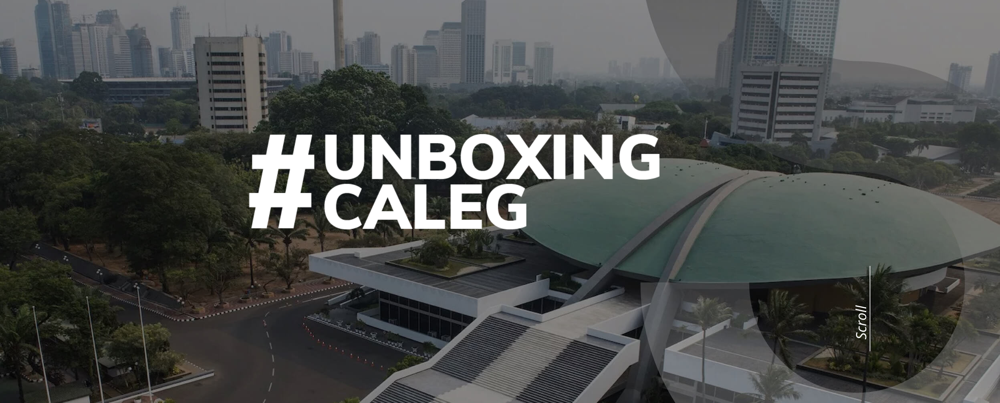
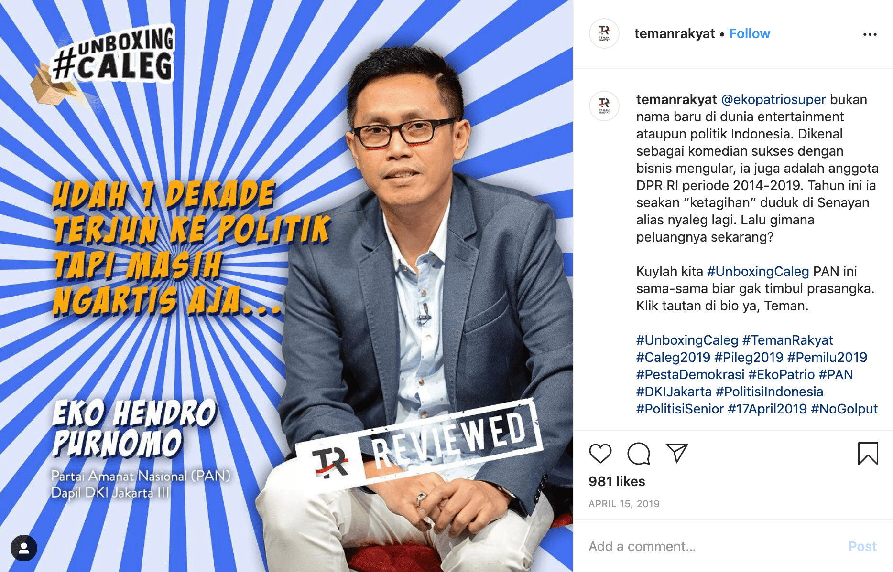
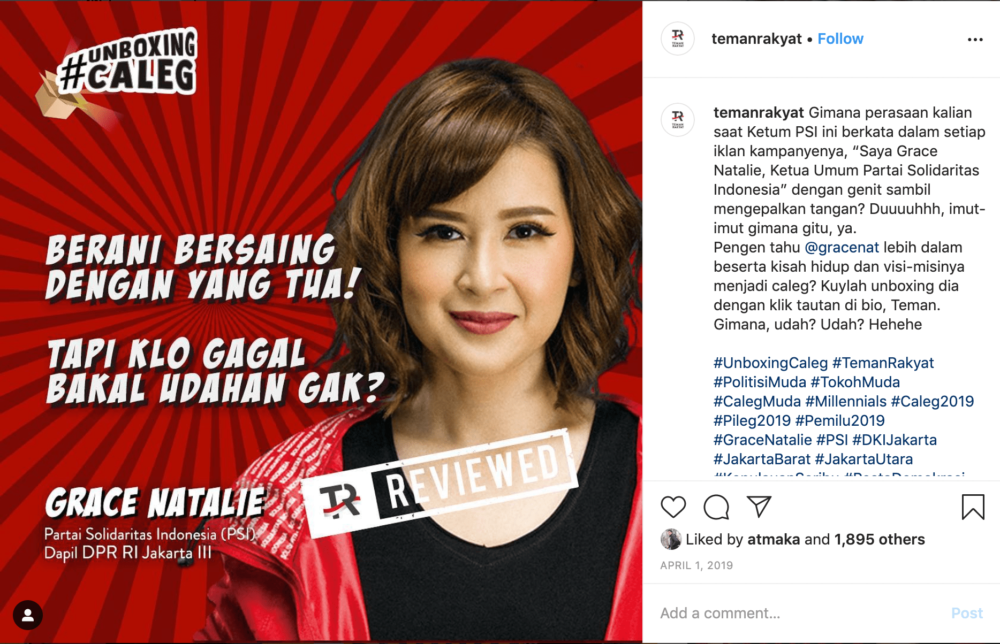
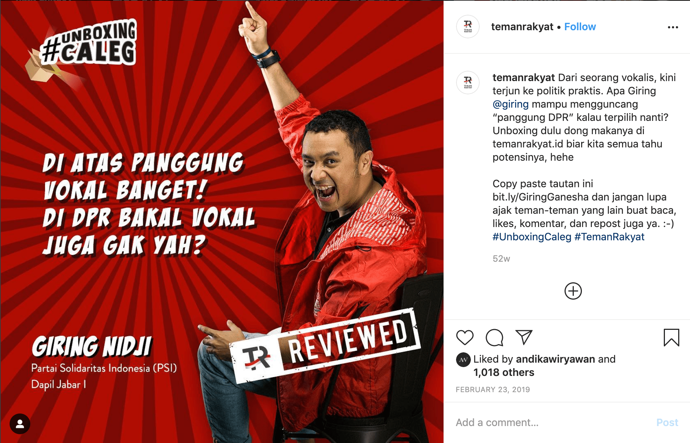
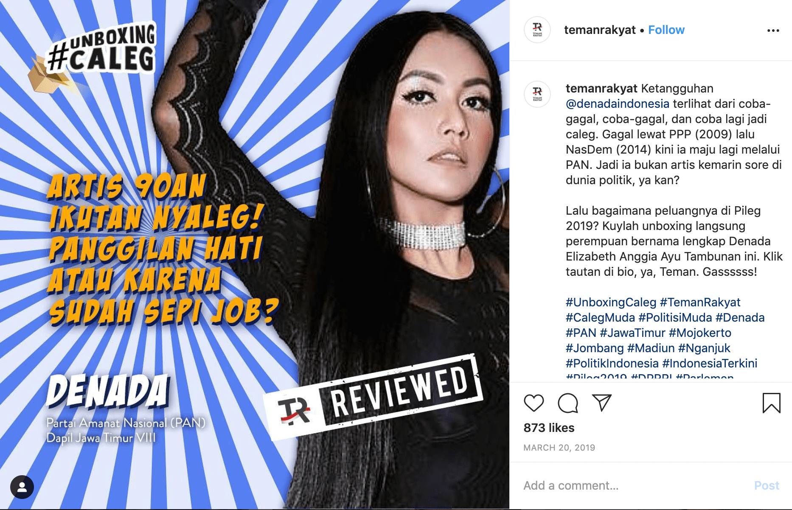
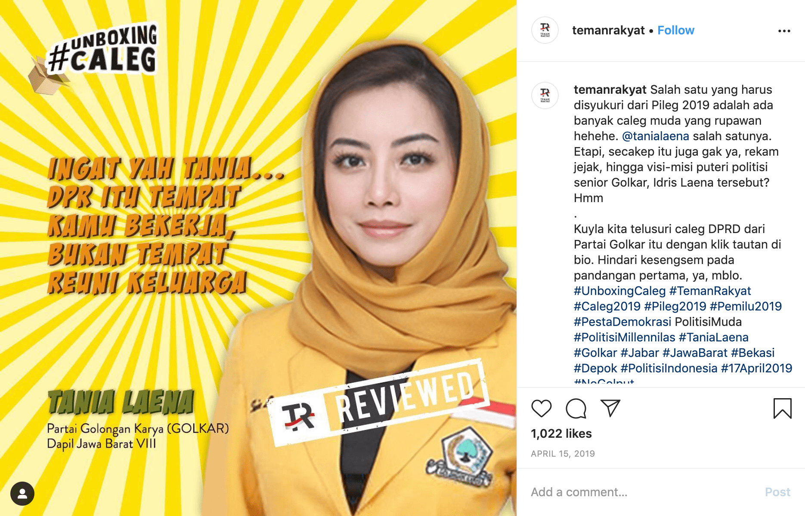
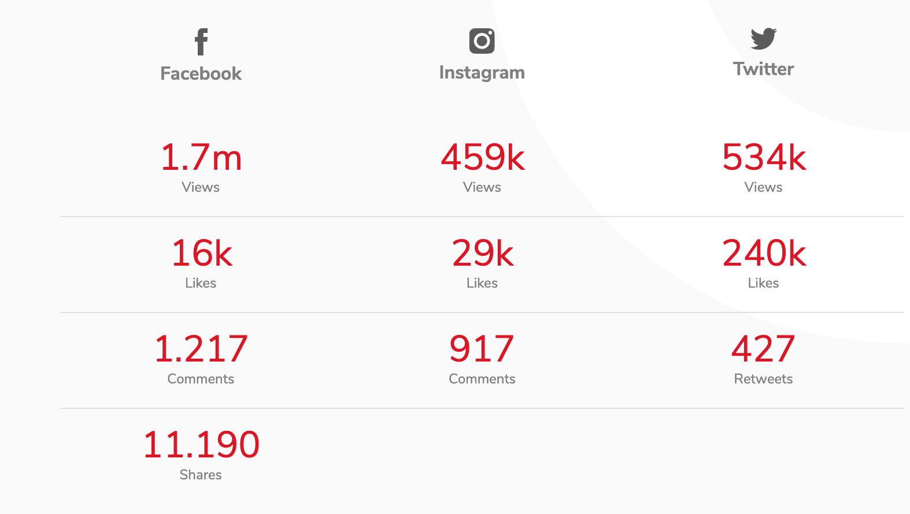
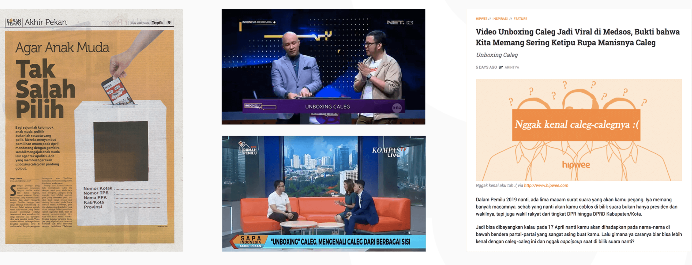

#UnboxingCaleg
Before you choose a candidate, shouldn't you know what's inside the box?
Borrowing the language of online unboxing to make legislative candidates easier for young voters to discover.

A serious question with a simple obstacle
Indonesian legislative elections ask voters to make decisions about a long list of candidates. For younger audiences, even knowing where to begin can be difficult. The project sought to make candidate information more approachable without telling anyone who to vote for.
Turn the internet's format into the idea
The creative leap was to borrow the familiar format of an unboxing video. Instead of unpacking a product, #UnboxingCaleg invites people to unpack the backgrounds and platforms of caleg, the Indonesian shorthand for legislative candidates. It makes political research feel closer to a recognisable online habit.
Build a language people will open
I worked on the narrative and social content, including witty teasers and short comedic pieces that encouraged people to explore the candidate reviews. The purpose was not to make politics trivial. It was to reduce the friction of paying attention. Better information starts with getting people interested enough to look.
See the work.
Original campaign imagery and films from Dan Pradana's archive, hosted in this repository.








Creative credits.
Team credits preserved from the original portfolio archive.